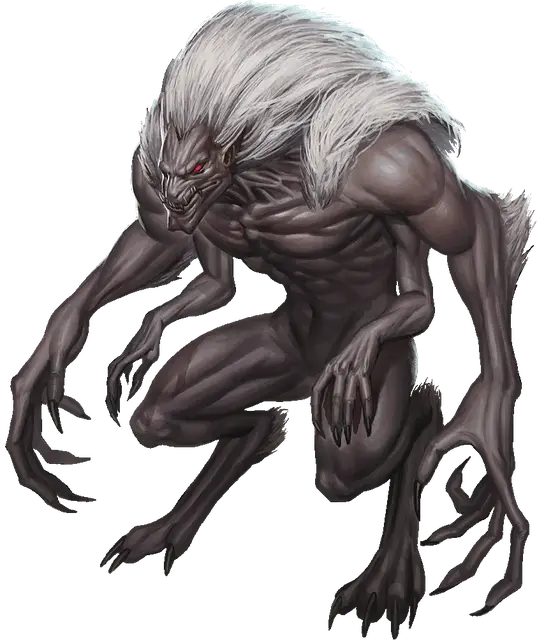

Дрэглот
Draegloth
Большое Исчадие (Демон), хаотично-злое

Класс Доспеха 15 (природный доспех)
Хиты 123 (13к10 + 52)
Скорость 30 футов
| мод | спас | ||
|---|---|---|---|
| СИЛ | 20 | +5 | +5 |
| ЛОВ | 15 | +2 | +2 |
| ТЕЛ | 18 | +4 | +4 |
| мод | спас | ||
|---|---|---|---|
| ИНТ | 13 | +1 | +1 |
| МДР | 11 | +0 | +0 |
| ХАР | 11 | +0 | +0 |
Навыки Восприятие +3, Скрытность +5
Сопротивление урону огонь, холод, электричество
Иммунитет к урону яд
Иммунитет к состояниям отравление
Чувства тёмное зрение 120 футов, пассивное Восприятие 13
Языки Бездны, Подземный, Эльфийский
Опасность 7 (2900 опыта)
Бонус мастерства +3
Среда обитания Подземье
Особенности
Наследие фей. . Дрэглот получает преимущество на спасброски против очарования и не может быть магически усыплён.
Врождённое колдовство. . Способность дрэглота к заклинаниям основана на Харизме (Сл спасброска от заклинаний 11). Дрэглот может накладывать следующие заклинания без использования материальных компонентов:
• Неограниченно: тьма [darkness].
• 1/день каждое: смятение [confusion], пляшущие огоньки [dancing lights], огонь фей [faerie fire].
Действия
Мультиатака. Дрэглот совершает три атаки: одну укусом и две когтями.
Укус. . Рукопашная атака оружием: +8 к попаданию, досягаемость 5 футов, одно существо. Попадание: 16 (2к10+ 5) колющего урона.
Когти. . Рукопашная атака оружием: +8 к попаданию, досягаемость 10 футов, одна цель. Попадание: 16 (2к10+ 5) рубящего урона.
Описание
Эти питомцы домов дроу так же грациозны и проворны как и сценические танцоры Уотердхавена. Вот только они убийцы и силовики, четырехрукие звери со строением огра. Жизнь несправедлива.
– Воло
Дрэглот – это демон полу–дроу, полу–глабрезу, рожденный от жрицы дроу через нечестивый и опасный ритуал. Одаренный врождённой магией и физической мощью, он обычно служит матери дома, используя свою жажду уничтожения в планах этого дома на победу над соперниками.
Дрэглот – это четырехрукий гуманоид размером с огра с пурпурно–чёрной кожей и желто–белыми волосами. Две его руки огромные и мускулистые и оканчивается острыми когтями; другие две имеют размер и форму рук дроу, и могут выполнять тонкую работу. Хоть существо и очень мускулистое, оно грациозное и тихое, подобно дроу. Его лицо демоническое, со звериными чертами, горящими красными глазами, длинной собачьей мордой и ртом полным острых зубов.
Благословение Дома. Ритуал по созданию дрэглота заканчивается успехом очень редко, но если это происходит, то это великое событие, которое дома дроу воспринимают как знак благоволения повелительницы демонов Лолс – и знак недовольства противниками дома, которые не были одарены. Это рождение побуждает глав дома начать созидание планов ударов по противникам, когда дрэглот вырастет. В этих планах дрэглоту отводится важная роль, поскольку его способности могут повернуть ход битвы против того дома, у которого нет своего дрэглота.
Раболепные Силовики. Хоть он и играет важную роль в благосостоянии дома, дрэглот не может подняться выше статуса любимого раба или консорта жрицы. До того как назначить дрэглоту какие–то обязанности, он получает инструкции принимать свою роль и не бороться за власть. Дрэглоты инстинктивно сопротивляются такому отношению, но большинство выплескивает свое расстройство на врагах дома. Дрэглот, который не может подавить свои амбиции может покинуть свой дом и отправиться в свой путь в одиночку. Являются ли эти повстанцы дрэглоты частью плана Лолс по насаждению ещё большего хаоса неясно.
Звериная Хитрость и Темная Магия. Дрэглоты любят чувство разрывания врагов на части своими когтями и зубами и обладание магией, текущей по их венам. Многие из них слишком нетерпеливы и не разрабатывают сложную тактику, но некоторые учат более деструктивную магию.